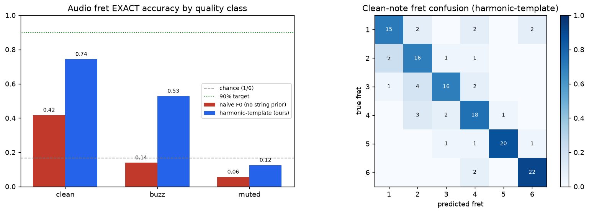

🎸 Tactus — the geometry of guitar mistakes
A Deaf-accessible guitar coach: from one webcam + one in-guitar mic, recover what you played, where, and how cleanly, and render it as a space you can rotate, cluster, and search. One player, one guitar, 1,032 analyzed events. Every number below is reconciled across two independent analyses and reported at the value that reproduces — held-out, fit-on-train-only.
String-conditioned harmonic-template
Clean notes, vs 42% for naive pitch tracking (2× fewer errors). The trick: the tab gives the string → 8 candidate frets → score each fret's harmonic comb → no octave errors. Deterministic, leakage-impossible.
clean / buzz / muted
Leakage-robust (0.687→0.653 group-held-out). d′ clean·muted 2.0. A genuine contribution — buzz/mute is not a benchmarked MIR task.
The device's nervous system
One live Redis = the clean/buzz/muted classifier (KNN, no model server) + semantic cache of the Claude coach (20% LLM calls saved) + mistake memory (2.2× string) + skill profile.
Honest negative, root-caused
Vision-pose can't read per-finger fret on this footage — the hand occludes the neck, the calibration homography never registers gameplay frames (per-frame re-reg: 0% locked). The fix is a camera angle, not more code. Saying this is the credibility.
Rotate it — the 3D semantic space (eigenvectors + clustering)
standardize → PCA → LDA, made legible: scree + named-feature loadings, a rotating LDA separation with class ellipsoids, a clustering bake-off scored vs a permutation floor, and the mono→poly transfer money-shot. Axes are titled by what they mean (PC1 = spectral brightness, 26% of variance).




Redis — beyond caching (why this beats a cache bolt-on)
Most teams use Redis as a KV cache. Tactus makes one live Redis the real-time semantic substrate of the device — proven on the live instance with held-out numbers.
| Redis module | What it does | Measured |
|---|---|---|
| RediSearch HNSW | The classifier IS a query — clean/buzz/muted by KNN, no model server | 62% (chance 33%) @ 0.75 ms p50, matches LDA on same folds |
| RediSearch (vector) | Semantic cache of the Claude vision-coach (Anthropic track) | 20% LLM calls saved @ 0.85 (sweep 59%→2%) |
| Vector memory | "You keep muting the A" — recurring-mistake retrieval | 67% of muted-A neighbours muted (2×); coherence 2.2× string |
| ReJSON + TimeSeries | Per-player skill profile + practice progression | A-string weakest by both classifier acc (54%) and mute-rate — two signals agree |
What we found — honest, reconciled
| Claim | FINAL honest number | verdict |
|---|---|---|
| Audio fret (clean, harmonic-template) | 84% exact / 92% within-1 (naive 42%) | ✓ the fret answer (audio) |
| clean / buzz / muted (audio) | 62–69% (chance 33%), leakage-robust | ✓ contribution |
| String-ID from timbre | 55–69% (chance 17%), leakage-robust | ✓ works |
| Mono→poly buzz transfer (H2) | multivariate d′ 1.04; chords 100% in mono range | ~ supported, modest |
| Muted detection (2 flavors: body-tap / palm-mute) | AUC 0.82, bimodal confirmed | ✓ works |
| Chord off-/fault-detection | AUC 0.90 | ✓ works |
| Chord-ID from audio | 0.02 group-CV (chance 0.11) — was 0.81 leaky | ✗ doesn't work → use the prior |
| Vision per-finger position | capture-limited (registration fails on gameplay frames) | ✗ honest negative, root-caused |